How to use the Day Trader Simulator
A step-by-step guide. You don't need to know anything about the stock market to follow it.
1What this is
This is a practice game for trading stocks. You get $100,000 of pretend money and you use it to buy and sell real stocks at their real, current prices.
Nothing here is real money. You can't lose anything, and you don't need a bank account or a broker. If you make a mess, you can reset and start again.
The goal of the game is to end the day with more money than you started with.
A few ideas you'll see again and again:
- A stock is a small piece of a company. One piece is called a share.
- Every stock has a short code called a ticker. Coca-Cola is
KO, JPMorgan isJPM, Ford isF. - The NYSE (New York Stock Exchange) is the place where many of these stocks are bought and sold.
- You make money if you buy low and sell higher. You lose money if the price goes the other way.
2Get started
The simulator is a website. You open it in a normal web browser, like Chrome, Safari, Edge or Firefox. There is nothing to install.
-
Open the website
-
Get a free key for the price data
The simulator needs a source of real stock prices. It uses a free service called Finnhub. To use it you need a key, which is like a free password that tells Finnhub who is asking.
When you first open the simulator, you'll see this box:
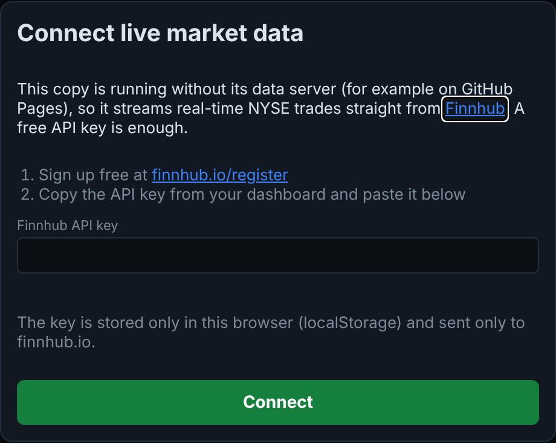
Here is how to get your key:
- Click the link finnhub.io/register in the box (or go to finnhub.io/register).
- Sign up with an email address and a password. You may be able to use a Google account instead. Confirm your email if they ask.
- After you log in, you'll see a page headed API Key. Your key is the long row of dots. Click the eye icon to see it, or the copy icon to copy it.
Good to knowIt's free. You are never asked for a credit card, bank details or any payment. If a page asks for money, you're on the wrong page.
The same page may also show a "Webhook" section with a "Secret". That is not your key. Only use the one under API Key.
-
Paste the key and press Connect
Paste your key into the box in the simulator and click the green Connect button. If you see "Finnhub rejected that API key", the key was copied wrong. Copy it again and make sure no spaces came along with it.
-
Wait about half a minute
The list of stocks on the left fills in with prices over the first 30 seconds or so. When the top right says Live · Finnhub, you're ready.
You only do this once. The simulator remembers your key in your browser.
The first time you visit, a blue strip near the top asks if you'd like to read this guide. You can always come back to it with the ? Help button in the top bar.
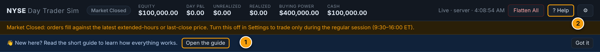
US stocks are traded Monday to Friday, 9:30am to 4:00pm New York time (called "Eastern time"). Prices move all day during these hours.
Outside these hours, prices barely change, because almost nobody is trading. The simulator still works: you can practice, and your orders use the last price. But it is much more fun during market hours.
3Your first trade
Let's buy some Coca-Cola stock and then sell it. It takes six steps. Nothing you do here costs real money.
-
Pick a stock
In the Watchlist on the left, click KO. The row lights up and the chart and the order ticket switch to Coca-Cola.
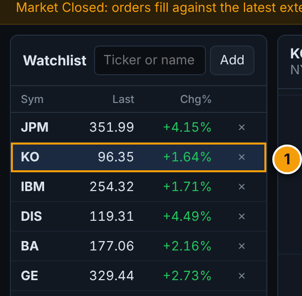
-
Look at the price
On the right, the Order Ticket shows the stock in the Symbol box (1) and its price in the box below (2).
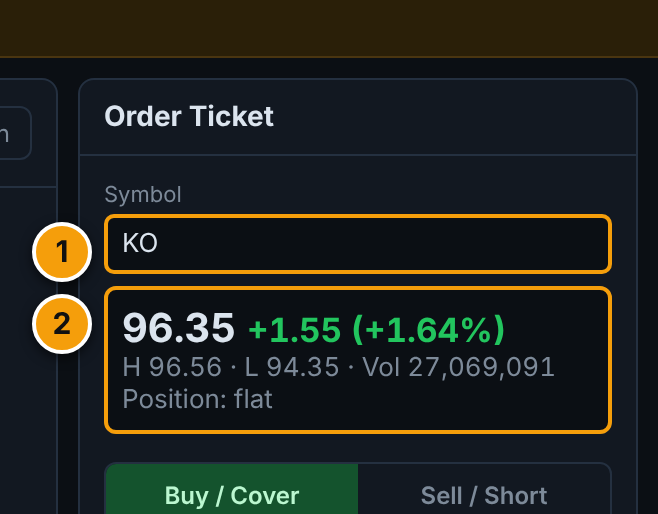
The big number is the price of one share. The green or red number after it is how much the price has changed since yesterday's close. H and L are the highest and lowest prices so far today. Vol is how many shares have been traded. Position: flat means you don't own any yet.
-
Choose how many shares
Type a number in the Shares box (1). Or click one of the quick buttons (2): 10, 50, 100, 500, or Max, which picks the most you can afford.
The small text underneath (3) shows roughly what it will cost.
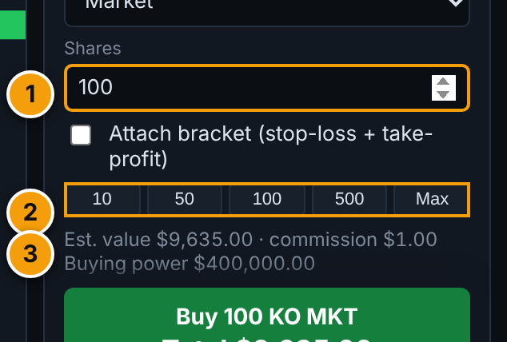
-
Press the green Buy button
Make sure Buy / Cover (1) is highlighted green and Type says Market. Then click the big green button (2).
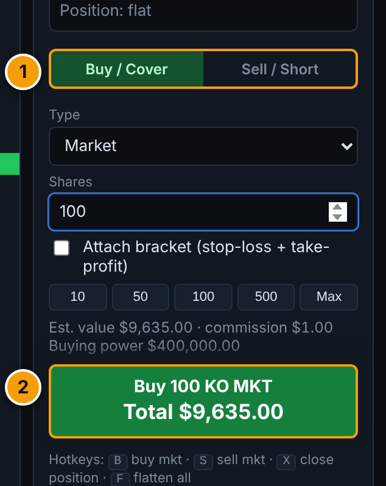
The big button tells you exactly what will happen: "Buy 100 KO MKT" means buy 100 shares at the market price. Under it is the total cost. A message pops up at the bottom right when the trade is done.
-
See what you own
Look at the Positions tab at the bottom. Your shares are listed there (1). The Close button (2) sells them again.
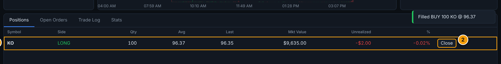
You'll see the price you paid (Avg), the price now (Last), and your profit or loss so far (Unrealized). It is called "unrealized" because you haven't sold yet, so it isn't final.
-
Sell it again
Click Close. The simulator sells all your shares at the current price. A message pops up with your result:
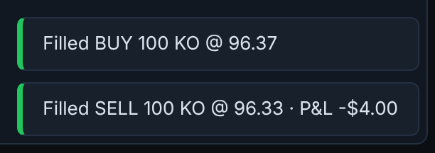
Now the Realized number in the top bar (1) shows your final profit or loss. Equity (2) shows the total value of everything you have.
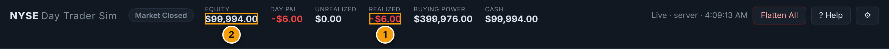
Why did I lose a few dollars?If the price didn't move, you'll usually be down a little. That's normal. Two small costs are built in, just like real trading:
- A fee (called a commission) of at least $1 on every buy and every sell.
- Slippage: you buy a tiny bit above the price you saw and sell a tiny bit below it. Real markets work this way too.
That's the whole game. Everything else in this guide is about doing it with more control.
4A tour of the screen
The screen has five main areas. They're numbered in the picture below.
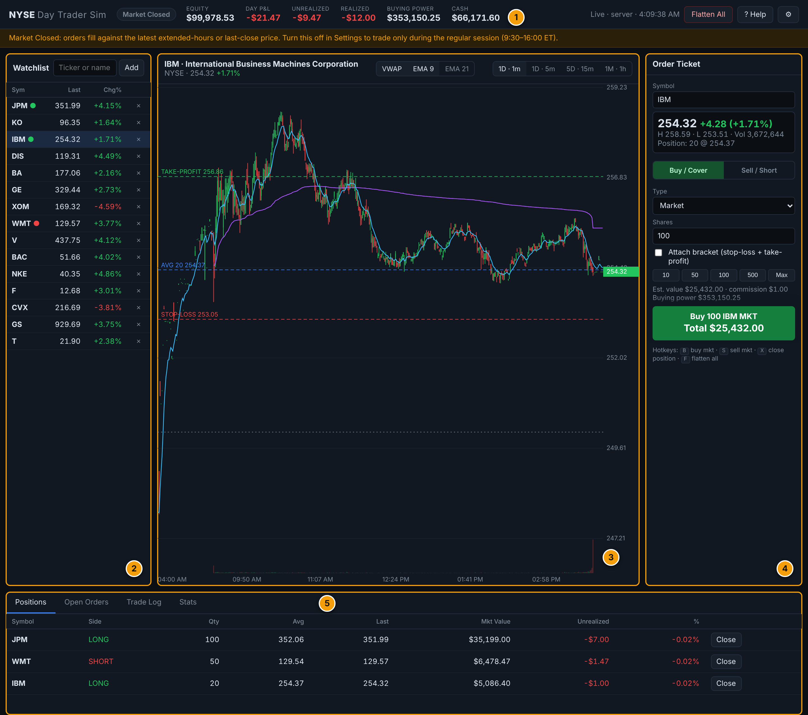
- The top bar. Your money, and the market's status.
- The watchlist. The stocks you're following.
- The chart. How the selected stock's price has moved.
- The order ticket. Where you buy and sell.
- The tabs. Your positions, waiting orders, history and score.
The top bar
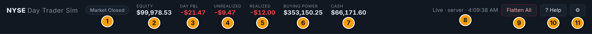
- Market status. Says NYSE Open during trading hours. Otherwise it says Pre-Market (early morning), After Hours (evening) or Market Closed.
- Equity. The total value of your account right now: your cash, plus the shares you own, minus anything you owe. You start with $100,000.
- Day P&L. How much you're up or down today. ("P&L" means profit and loss.) Green is up, red is down.
- Unrealized. Profit or loss on shares you still own. It changes every second as prices move, and it only becomes real when you sell.
- Realized. Profit or loss from trades you have finished, after fees. This is the money you've actually made or lost.
- Buying Power. How much more you're allowed to buy right now. It starts at $400,000, which is more than your cash. This is explained in the settings section under "leverage".
- Cash. The cash in your account. It goes down when you buy and up when you sell.
- Connection status. Shows the data source and the time of the last update, for example Live · Finnhub. If it turns orange or red, the price feed has a problem. Wait a moment, or reload the page.
- Flatten All. Panic button. It sells everything you own and cancels all waiting orders in one click.
- ? Help. Opens this guide.
- ⚙ Settings. Opens the settings. See Settings.
The watchlist
This is your list of stocks to keep an eye on. It shows each stock's ticker, its latest price, and how much it has changed today. Green means up and red means down.
- Click a stock to select it. The chart and ticket switch to that stock.
- A small green dot next to a ticker means you own shares of it. A red dot means you have a short position (explained below).
- Click the × at the end of a row to remove a stock from the list.
- Prices flash green or red when they change.
- Hover over a ticker for about a second to see the company's full name and the exchange it trades on.
Adding more stocks
Type in the box at the top of the watchlist. You can type a ticker (like GM) or a company name (like apple). A list of matches appears.
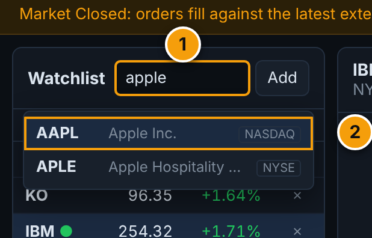
- Type a name or a ticker.
- Click a match, or use the up and down arrow keys and press Enter. The stock is added to the bottom of your list.
The tag on the right of each match shows which exchange it trades on. Many famous companies, like Apple, trade on a different exchange called Nasdaq instead of the NYSE. The simulator tells you when that happens and shows an Add anyway button. Click it and you can trade that stock like any other.
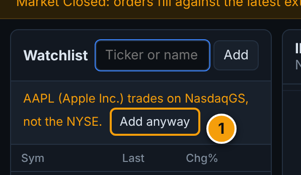
The chart
The chart shows how the price of the selected stock has moved. Each little bar is called a candle. One candle shows what happened to the price during one short period, such as one minute.
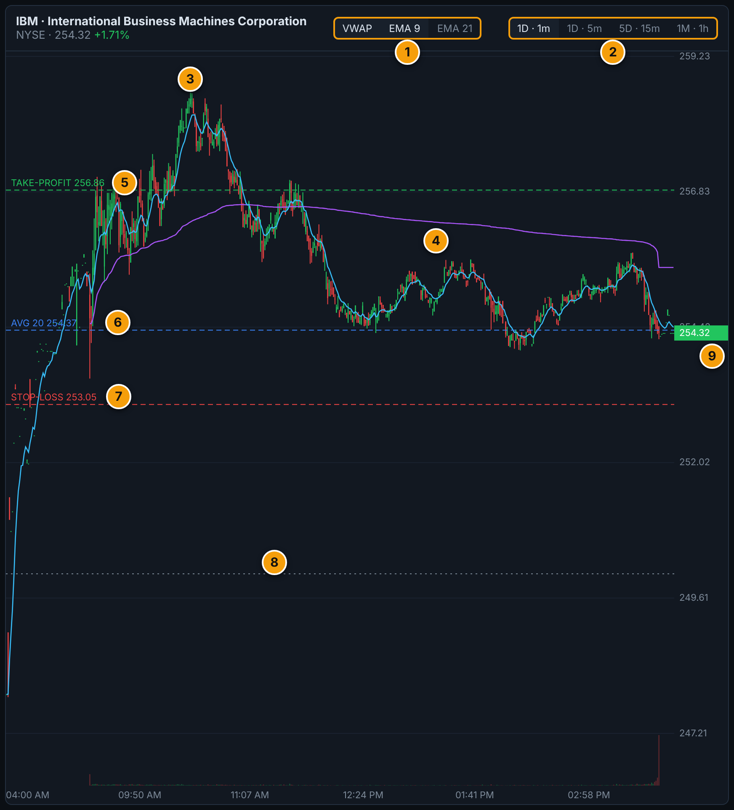
- Indicator buttons. Switch the extra lines on and off (explained below).
- Time buttons. Choose how far back to look and how long each candle is. 1D · 1m means one day, one candle per minute.
- A candle. Green means the price rose during that period. Red means it fell. The thin line through it shows the highest and lowest price reached.
- Purple line (VWAP). The day's average price, giving more weight to times when lots of shares were traded. Traders use it as a "fair price" for the day.
- Green dashed line. Your take-profit price (see Protecting a trade).
- Blue dashed line. The average price you paid for the shares you own.
- Red dashed line. Your stop-loss price (see Protecting a trade).
- Grey dotted line. Yesterday's closing price. It shows whether the stock is up or down today.
- Latest price tag. The current price. It's green if the stock is up today and red if it's down.
The bars along the bottom of the chart show volume: how many shares were traded in each period. An orange dashed line on the chart is an order that is waiting for its price (see Types of order).
The indicator lines:
- VWAP (purple): described above.
- EMA 9 (light blue): a smooth line that follows the average of the last 9 candles. It reacts quickly.
- EMA 21 (pink): the same idea over the last 21 candles. It reacts more slowly. When the fast line crosses above the slow one, some traders read that as the price turning up.
Move your mouse over the chart to see the exact open, high, low and close for any candle.
The free price data doesn't include history. So on the website the chart starts empty and fills in while you keep the page open, one candle per minute. It also remembers what it saw on earlier visits. The pictures in this guide show a full day, so yours will look smaller at first. The 5-day and 1-month buttons are greyed out for the same reason.
When the market is closed, nothing is trading, so the chart shows a single flat candle.
The order ticket
This is where you place trades. An order is an instruction to buy or sell.
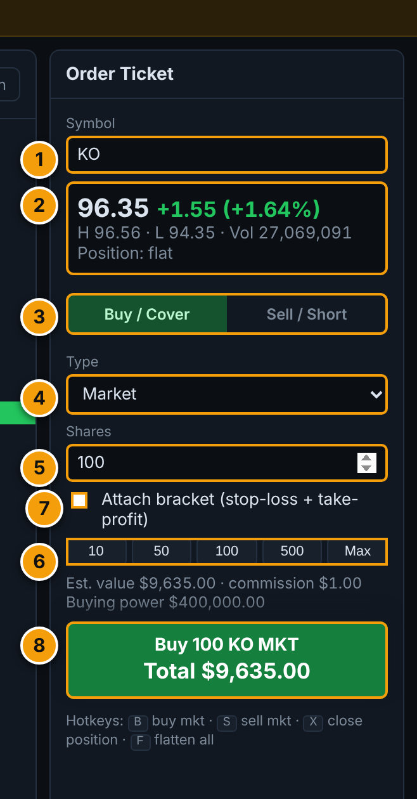
- Symbol. The ticker you're trading. It matches the stock you selected. You can also type a ticker here.
- Price box. The price of one share, today's change, the day's high and low, the volume, and how many shares you hold.
- Buy / Cover or Sell / Short. Buy purchases shares. Sell sells shares you own. If you sell shares you don't own, that's a "short" (see below). The big button changes its words to match, for example "Buy to Cover" or "Sell Short".
- Type. Market, Limit or Stop. See Types of order.
- Shares. How many shares to trade.
- Quick buttons. 10, 50, 100, 500 shares, or Max for as many as you can afford.
- Attach bracket. Adds automatic safety orders. See Protecting a trade.
- The big button. Places the order. It shows what you're about to do and the total amount: shares times price.
Above the button, Est. value is the same total, and commission is the fee. Buying power is how much you can still buy.
Buying, selling and "shorting"
- Long means you bought shares and hope the price goes up.
- Short (or "selling short") is the opposite. You sell shares you don't own, hoping the price goes down, so you can buy them back cheaper. If the price goes up instead, you lose money. Shorting is a normal part of day trading, and it's included here so you can practice it.
- Cover means buying back shares to end a short.
The tabs at the bottom
Four tabs sit at the bottom of the screen. Click a name to switch.
Positions
A position is a stock you currently own (or are short). This tab lists them all.
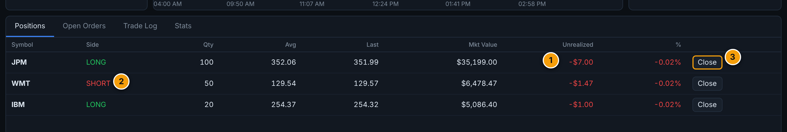
- Unrealized. Your profit or loss on this position so far, in dollars. The % column shows the same thing as a percentage.
- Side. LONG (you own shares) or SHORT (you sold shares you don't own).
- Close. Ends the position at the current price.
The other columns are Qty (how many shares), Avg (the average price you paid), Last (the price now) and Mkt Value (what those shares are worth now).
Open Orders
Some orders don't happen right away. They wait until the price reaches a level you chose. This tab lists the ones still waiting.
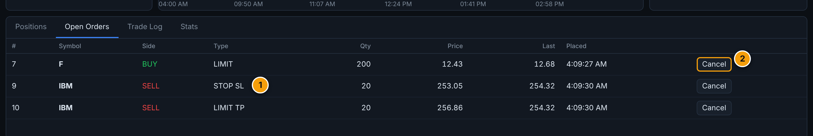
- Type. LIMIT or STOP. The small tag SL means stop-loss and TP means take-profit. They belong to a bracket.
- Cancel. Removes a waiting order.
Trade Log
A history of every buy and sell you have made, newest first.
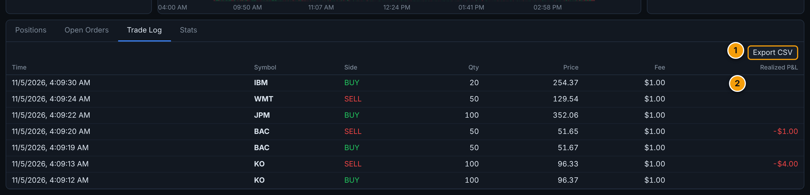
- Export CSV. Downloads your history as a file you can open in a spreadsheet, such as Excel or Google Sheets.
- Realized P&L. Your profit or loss. It only appears on the trades that closed a position, so you'll see blanks on trades that opened one.
Stats
Your scorecard.
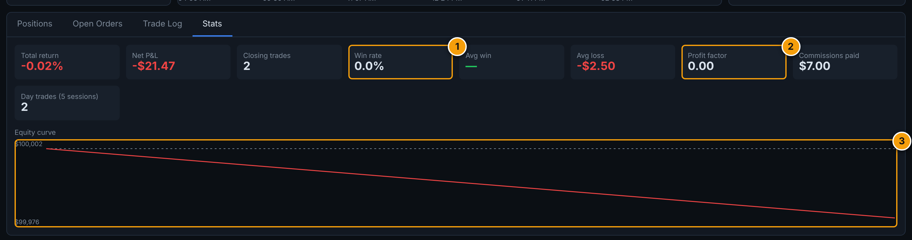
- Total return and Net P&L: how far your account is up or down since you started.
- Closing trades: how many trades have ended a position.
- Win rate (1): the share of those trades that made money.
- Avg win and Avg loss: the average size of your good and bad trades.
- Profit factor (2): total money won divided by total money lost. Above 1.0 means you're ahead.
- Commissions paid: total fees so far.
- Day trades: how many round trips (a buy and a sell of the same stock on the same day) you made recently. Real brokers limit accounts under $25,000 to 3 of these in 5 days. The simulator doesn't stop you, but it shows a warning in red if you pass that.
- Equity curve (3): a line showing your account value over time. The dashed line is where you started.
5Types of order
The Type box in the order ticket has three choices.
| Type | What it does | Use it when |
|---|---|---|
| Market | Buys or sells right now at the current price. | You want in or out immediately. |
| Limit | Waits until the price is as good as the number you set. A buy limit only buys at your price or lower. A sell limit only sells at your price or higher. | You'd rather wait for a better price than pay today's. |
| Stop | Waits until the price reaches your number, then trades at the market price. A sell stop triggers when the price falls to your number. A buy stop triggers when it rises to it. | You want to get out if things go wrong, or jump in if the price breaks upward. |
When you choose Limit or Stop, a price box appears. It starts at the current price. Change it to the level you want.
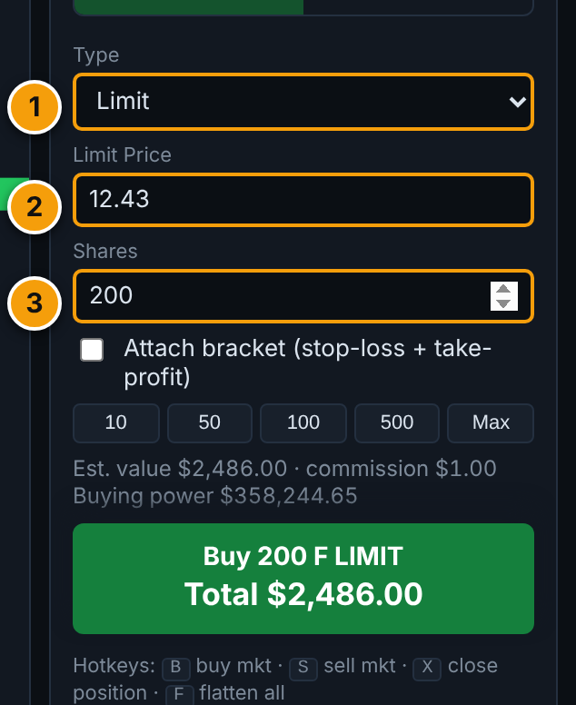
- Type set to Limit.
- Limit price. The price you're willing to pay. Here it is a little below the current price.
- Shares. The big button now reads "Buy 200 F LIMIT" with the total at your price.
Orders that haven't happened yet appear under Open Orders, and as orange dashed lines on the chart. You can cancel them any time.
Orders can wait only while the page is open. The simulator checks them every few seconds against the live price.
6Protecting a trade
Prices can move fast. A bracket is a pair of automatic orders that protect a trade. You set them at the moment you buy.
- Stop-loss: a price below where you bought. If the price drops to it, the simulator sells automatically so you don't lose more.
- Take-profit: a price above where you bought. If the price rises to it, the simulator sells automatically and locks in your gain.
Whichever happens first wins, and the other one is cancelled. If you close the position yourself, both are cancelled.
To use it, tick Attach bracket before you place the order.
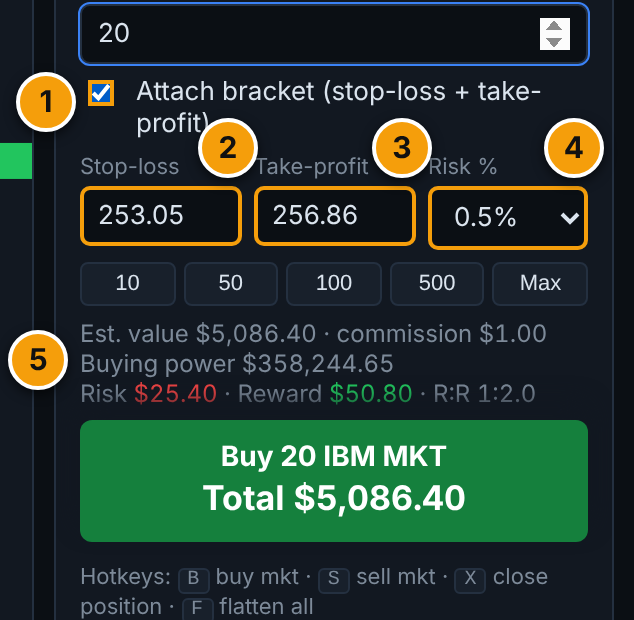
- Attach bracket ticked.
- Stop-loss price. It's filled in for you, and you can change it.
- Take-profit price. Also filled in, and you can change it.
- Risk %. How far from your buy price the stop-loss sits: 0.25%, 0.5%, 1% or 2%. The take-profit is set twice as far away. Change this and both boxes update.
- Risk and reward. The most you would lose if the stop-loss triggers, the most you would gain if the take-profit triggers, and their ratio. "R:R 1:2" means you stand to gain twice what you risk.
After you place the order, the two safety orders show up in Open Orders and as a red and a green dashed line on the chart.
For a buy, the stop-loss must be below the price and the take-profit above it. For a short, it's the other way around. The simulator tells you if a number is on the wrong side.
7Settings
Click the ⚙ button in the top right.
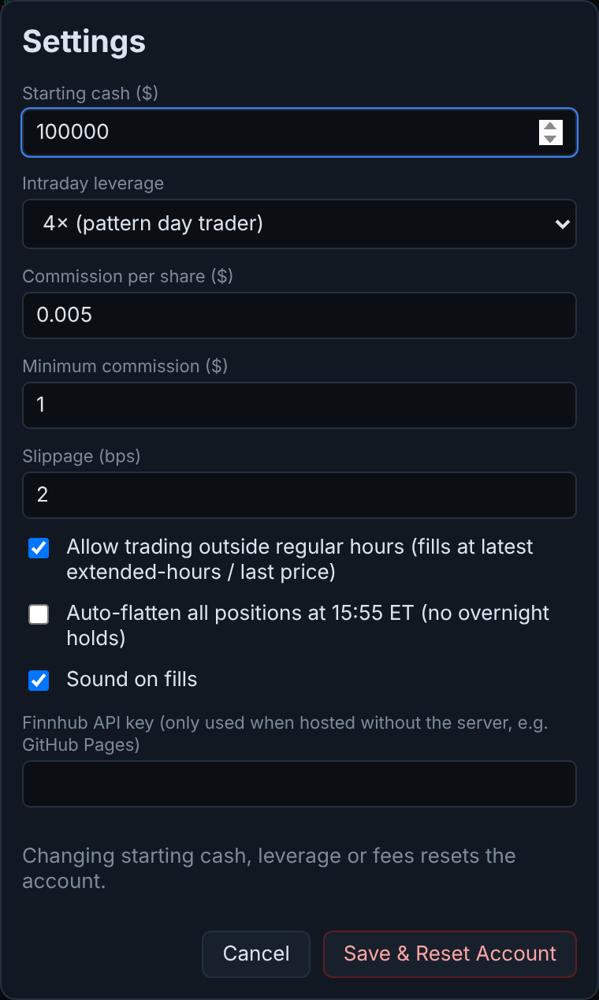
| Setting | What it means |
|---|---|
| Starting cash | How much pretend money you begin with. The default is $100,000. |
| Intraday leverage | "Leverage" means being allowed to trade with more money than you have, as if you had borrowed it. At 4× (the default) you can hold up to four times your account value in stocks during the day, so $100,000 gives $400,000 of buying power. Real brokers allow this only for same-day trading. 1× means no borrowing. Leverage makes gains and losses bigger. |
| Commission per share | The fee charged for each share you trade. Default: half a cent ($0.005). |
| Minimum commission | The smallest fee for any one trade. Default: $1. |
| Slippage (bps) | How much worse than the shown price your order is filled. "bps" means hundredths of a percent. The default of 2 is 0.02%, and never less than one cent per share. |
| Allow trading outside regular hours | On by default. When the market is closed, your orders use the latest available price. Untick it to trade only from 9:30am to 4:00pm Eastern. |
| Auto-flatten at 15:55 ET | Off by default. When ticked, the simulator sells everything at 3:55pm Eastern (5 minutes before the close), so you never hold stocks overnight. Many day traders do this on purpose. It only works while the page is open. |
| Sound on fills | Plays a short beep when an order is filled. |
| Finnhub API key | The key you pasted earlier. Change it here if you ever get a new one. |
The money settings (starting cash, leverage, commission and slippage) only take effect when you press Save & Reset Account. That erases all your positions and trade history and starts again with a fresh account. You'll be asked to confirm first.
This is also how you start over if you've lost all your pretend money.
8Keyboard shortcuts
For fast trading. They work when you're not typing in a box, and they use the stock and share count currently in the order ticket.
| Key | What it does |
|---|---|
| B | Buy at the market price. |
| S | Sell at the market price. |
| X | Close your position in the selected stock. |
| F | Flatten: sell everything and cancel all waiting orders. |
9Word list
Every trading word used in the simulator, in plain English.
- Stock / share
- A stock is a small piece of ownership in a company. Each piece is a share.
- Ticker
- The short code for a stock, such as KO for Coca-Cola.
- Exchange
- A marketplace where stocks are traded. The NYSE and Nasdaq are the two biggest in the US.
- Buy / sell
- Buying gets you shares. Selling gives them up for cash.
- Long
- Owning shares and hoping the price goes up.
- Short
- Selling shares you don't own and hoping the price goes down, so you can buy them back cheaper.
- Cover
- Buying back shares to end a short.
- Order
- An instruction to buy or sell.
- Market order
- Trade right now at the current price.
- Limit order
- Trade only at your price or better.
- Stop order
- Wait until the price reaches your number, then trade at the market price.
- Fill / filled
- When an order actually happens, it has been "filled".
- Position
- A stock you currently hold (or are short).
- Flat
- Holding no shares of a stock.
- Close a position
- Sell what you own (or buy back what you shorted) to end the trade.
- Flatten
- Close every position at once.
- Profit and loss (P&L)
- How much you've gained or lost.
- Unrealized
- Profit or loss on shares you still hold. Not final until you sell.
- Realized
- Profit or loss from trades you have finished.
- Equity
- The total value of your account: cash plus the value of your shares, minus anything you owe.
- Buying power
- How much more you're allowed to buy right now.
- Leverage
- Trading with more money than you actually have, as if borrowed. It multiplies both gains and losses.
- Commission
- A fee a broker charges for each trade.
- Slippage
- The small difference between the price you see and the price you actually get.
- Bracket
- A stop-loss and a take-profit attached to a trade.
- Stop-loss
- An automatic sell if the price falls to your number, to limit your loss.
- Take-profit
- An automatic sell if the price rises to your number, to lock in a gain.
- Risk / reward (R:R)
- How much you could lose compared with how much you could gain on a trade.
- Candle
- One bar on the chart. It shows how the price moved during one short period.
- Volume
- How many shares were traded.
- VWAP
- The day's average price, counting busy moments more. A "fair price" for the day.
- EMA
- A smooth line following the recent average price. EMA 9 uses the last 9 candles and EMA 21 uses the last 21.
- Previous close
- The price at the end of the last trading day.
- Watchlist
- Your list of stocks to follow.
- Day trade
- Buying and selling the same stock on the same day.
- Pre-market / after hours
- Quieter trading before 9:30am and after 4:00pm Eastern.
10If something looks wrong
The chart is empty or has just one bar
The prices aren't moving
"Finnhub rejected that API key"
I can't add a stock
- "no such stock found": check the ticker, or search by company name instead.
- "trades on … not the NYSE": the stock is on another exchange. Click Add anyway.
- "timed out": the price service is busy. Wait a few seconds and try again.
The Buy button is grey or nothing happens
The "Connect live market data" box keeps appearing
My trades and money disappeared
How do I start over?
11Good to know
- It's all pretend. No real money is ever used, and no real orders are sent to any broker.
- The prices are real, but they come from a free data service, so they may differ by a few cents from other sources. They're good for practice, not for real trading decisions.
- Real trading is harder. The simulator is simpler than a real broker. Real orders can take longer to fill, and prices can jump past your stop. Don't assume your results here will repeat with real money.
- This isn't financial advice. It's an educational game.
- Privacy. Your key, your account and your trade history stay in your own browser. Only the ticker symbols you look at are sent to Finnhub to get prices.
Ready to try it?
Open the simulator